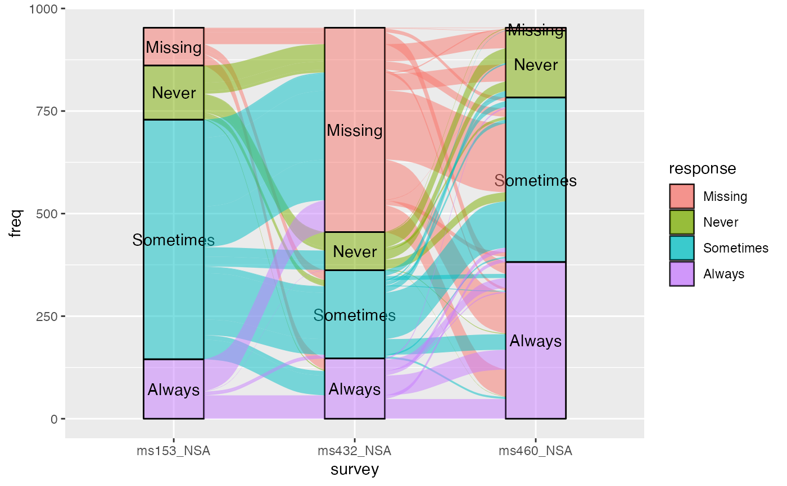
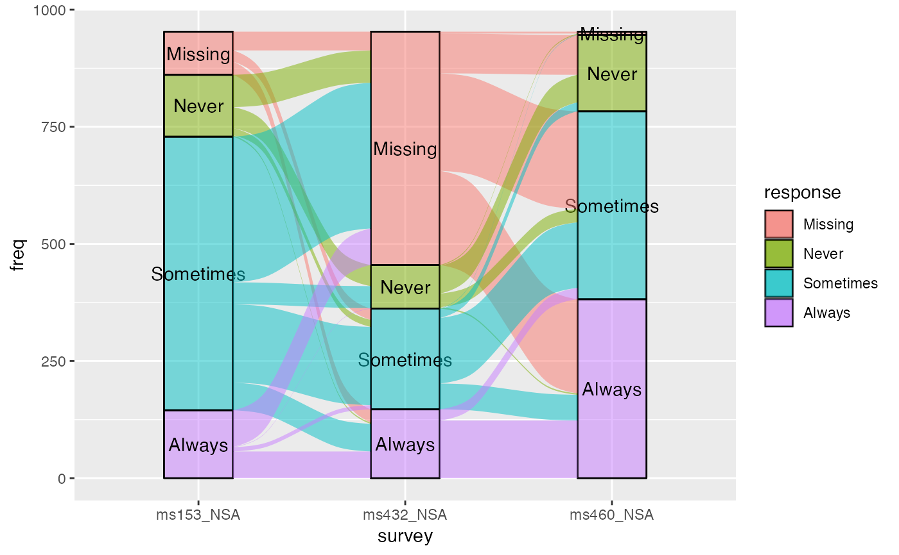
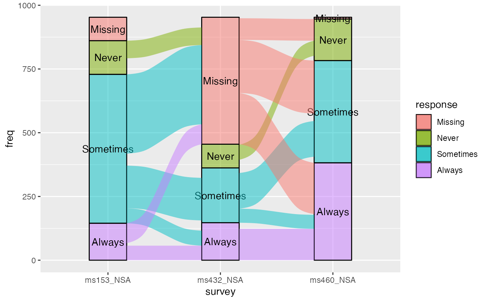
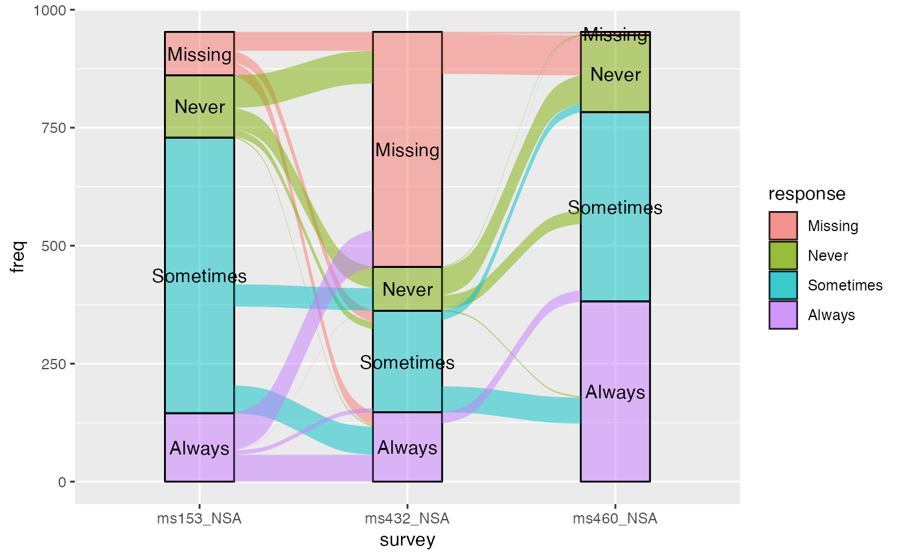
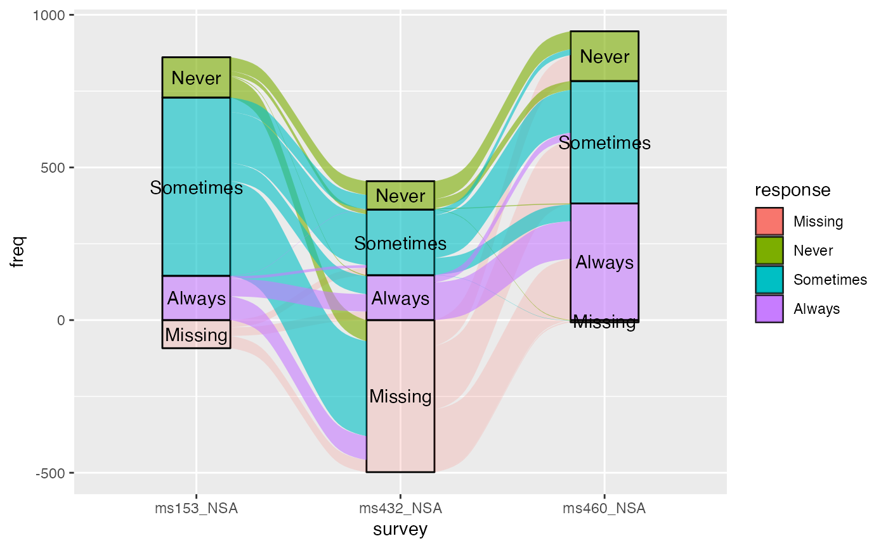
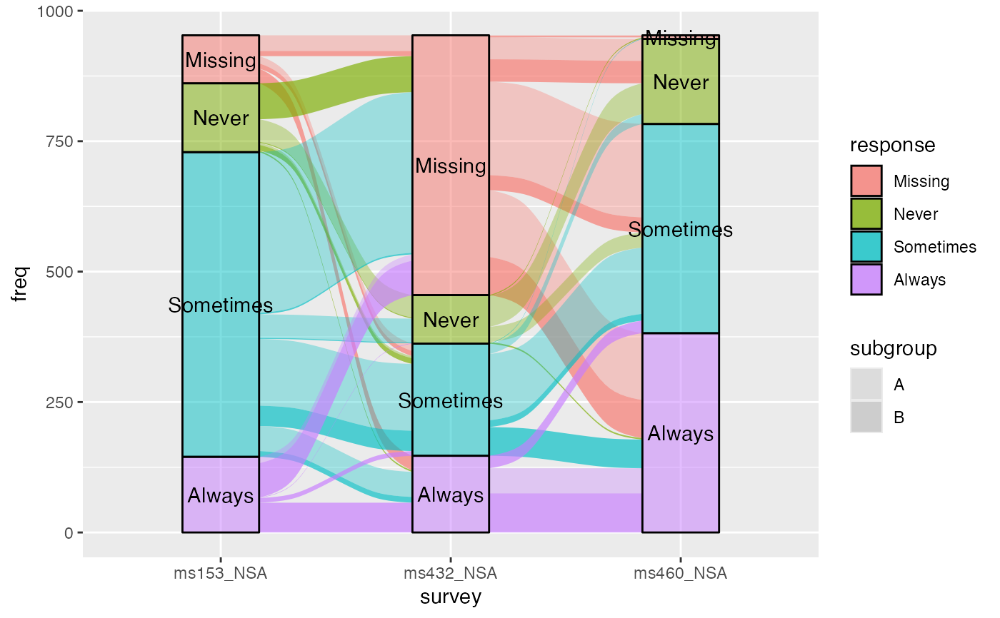
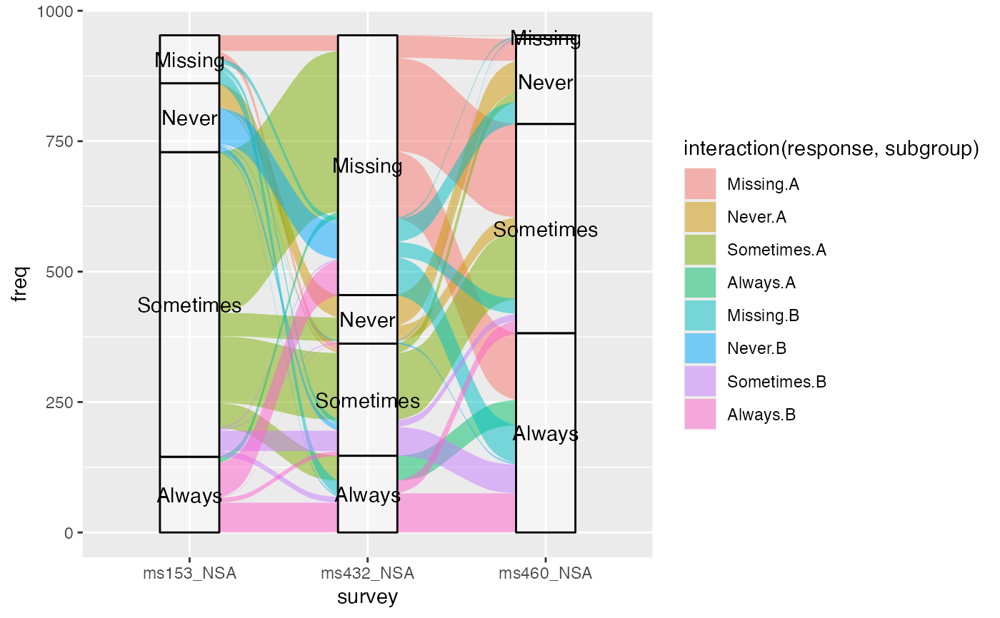

Flow positions
stat_flow.RdGiven a dataset with alluvial structure, stat_flow calculates the centroids
(x and y) and heights (ymin and ymax) of the flows between each pair
of adjacent axes.
stat_flow( mapping = NULL, data = NULL, geom = "flow", position = "identity", decreasing = ggalluvial_opt("decreasing"), reverse = ggalluvial_opt("reverse"), absolute = ggalluvial_opt("absolute"), discern = FALSE, negate.strata = NULL, aes.bind = ggalluvial_opt("aes.bind"), infer.label = FALSE, min.y = NULL, max.y = NULL, na.rm = FALSE, show.legend = NA, inherit.aes = TRUE, ... )
Arguments
| mapping | Set of aesthetic mappings created by |
|---|---|
| data | The data to be displayed in this layer. There are three options: If A A |
| geom | The geometric object to use display the data; override the default. |
| position | Position adjustment, either as a string, or the result of a call to a position adjustment function. |
| decreasing | Logical; whether to arrange the strata at each axis
in the order of the variable values ( |
| reverse | Logical; if |
| absolute | Logical; if some cases or strata are negative,
whether to arrange them (respecting |
| discern | Passed to |
| negate.strata | A vector of values of the |
| aes.bind | At what grouping level, if any, to prioritize differentiation
aesthetics when ordering the lodes within each stratum. Defaults to
|
| infer.label | Logical; whether to assign the |
| min.y | Numeric; bounds on the heights of the strata to be
rendered. Use these bounds to exclude strata outside a certain range, for
example when labeling strata using |
| max.y | Numeric; bounds on the heights of the strata to be
rendered. Use these bounds to exclude strata outside a certain range, for
example when labeling strata using |
| na.rm | Logical:
if |
| show.legend | logical. Should this layer be included in the legends?
|
| inherit.aes | If |
| ... | Additional arguments passed to |
Aesthetics
stat_alluvium, stat_flow, and stat_stratum require one
of two sets of aesthetics:
xand at least one ofalluviumandstratumany number of
axis[0-9]*(axis1,axis2, etc.)
Use x, alluvium, and/or stratum for data in lodes format
and axis[0-9]* for data in alluvia format (see alluvial-data).
Arguments to parameters inconsistent with the format will be ignored.
Additionally, each stat_*() accepts the following optional
aesthetics:
ygrouplabel
y controls the heights of the alluvia
and may be aggregated across equivalent observations.
group is used internally; arguments are ignored.
label is used to label the strata or lodes and must take a unique value
across the observations within each stratum or lode.
Often the same variable will be passed to label as to the corresponding
alluvial aesthetic (stratum or alluvium).
These and any other aesthetics are aggregated as follows:
Numeric aesthetics, including y, are summed.
Character and factor aesthetics, including label,
are assigned to strata or lodes provided they take unique values across the
observations within each (and are otherwise assigned NA).
Package options
stat_stratum, stat_alluvium, and stat_flow order strata and lodes
according to the values of several parameters, which must be held fixed
across every layer in an alluvial plot. These package-specific options set
global values for these parameters that will be defaulted to when not
manually set:
ggalluvial.decreasing(eachstat_*): defaults toNA.ggalluvial.reverse(eachstat_*): defaults toTRUE.ggalluvial.absolute(eachstat_*): defaults toTRUE.ggalluvial.cement.alluvia(stat_alluvium): defaults toFALSE.ggalluvial.lode.guidance(stat_alluvium): defaults to"zigzag".ggalluvial.lode.ordering(stat_alluvium): defaults toNULL.ggalluvial.aes.bind(stat_alluviumandstat_flow): defaults to"none".
See base::options() for how to use options.
Defunct parameters
The previously defunct parameters weight and aggregate.wts have been
discontinued. Use y and cement.alluvia instead.
See also
ggplot2::layer() for additional arguments and
geom_alluvium() and
geom_flow() for the corresponding geoms.
Other alluvial stat layers:
stat_alluvium(),
stat_stratum()
Examples
# illustrate positioning ggplot(as.data.frame(Titanic), aes(y = Freq, axis1 = Class, axis2 = Sex, axis3 = Age, color = Survived)) + stat_stratum(geom = "errorbar") + geom_line(stat = "flow") + stat_flow(geom = "pointrange") + geom_text(stat = "stratum", infer.label = TRUE) + scale_x_discrete(limits = c("Class", "Sex", "Age"))# alluvium--flow comparison data(vaccinations) gg <- ggplot(vaccinations, aes(x = survey, stratum = response, alluvium = subject, y = freq, fill = response)) + geom_stratum(alpha = .5) + geom_text(aes(label = response), stat = "stratum") # rightward alluvial aesthetics for vaccine survey data gg + geom_flow(stat = "alluvium", lode.guidance = "forward")# size filter examples gg <- ggplot(vaccinations, aes(y = freq, x = survey, stratum = response, alluvium = subject, fill = response, label = response)) + stat_stratum(alpha = .5) + geom_text(stat = "stratum") # omit small flows gg + geom_flow(min.y = 50)# negate missing entries ggplot(vaccinations, aes(y = freq, x = survey, stratum = response, alluvium = subject, fill = response, label = response, alpha = response != "Missing")) + stat_stratum(negate.strata = "Missing") + geom_flow(negate.strata = "Missing") + geom_text(stat = "stratum", alpha = 1, negate.strata = "Missing") + scale_alpha_discrete(range = c(.2, .6)) + guides(alpha = FALSE)#> Warning: Using alpha for a discrete variable is not advised.# aesthetics that vary betwween and within strata data(vaccinations) vaccinations$subgroup <- LETTERS[1:2][rbinom( n = length(unique(vaccinations$subject)), size = 1, prob = .5 ) + 1][vaccinations$subject] ggplot(vaccinations, aes(x = survey, stratum = response, alluvium = subject, y = freq, fill = response, label = response)) + geom_flow(aes(alpha = subgroup)) + scale_alpha_discrete(range = c(1/3, 2/3)) + geom_stratum(alpha = .5) + geom_text(stat = "stratum")#> Warning: Using alpha for a discrete variable is not advised.# can even set aesthetics that vary both ways ggplot(vaccinations, aes(x = survey, stratum = response, alluvium = subject, y = freq, label = response)) + geom_flow(aes(fill = interaction(response, subgroup)), aes.bind = "alluvia") + scale_alpha_discrete(range = c(1/3, 2/3)) + geom_stratum(alpha = .5) + geom_text(stat = "stratum")#> Warning: Using alpha for a discrete variable is not advised.#> Warning: `aes.bind = 'alluvia'` only available for `geom_alluvium()`; changing to 'flows'.